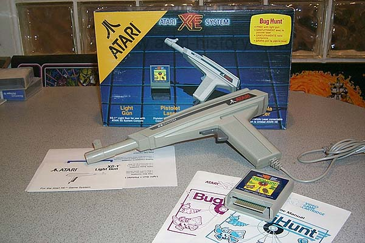

The
Atari XE System Lightgun. (XG-1) Was sold as a seperate package.
Originally this accessory and the "Bug Hunt" cartridge were packaged together
with the Atari XE Game System. To allow existing Atari
400/800, XL/XE computer owners the chance to also use this accessory and
games designed for use with it, Atari sold it seperately.
The game also worked with the Atari 7800 PROsystem as well with games that
were compatible.